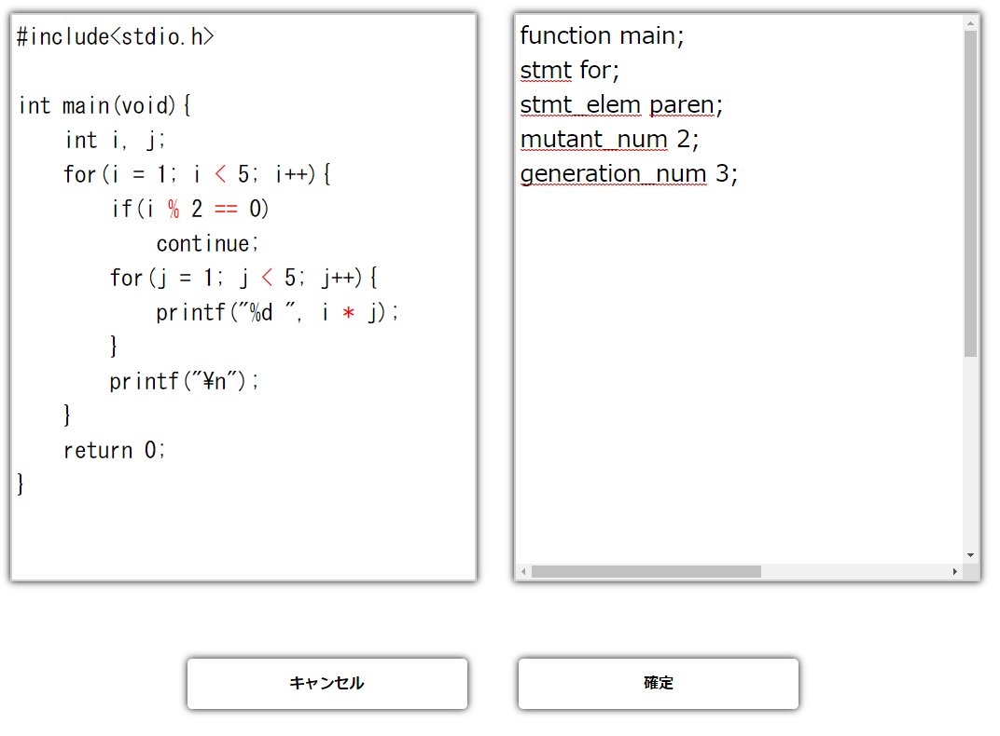

摂動を用いたランダムなコード生成手法の提案及び有効性評価
このページでは、2021年3月 電子情報通信学会総合大会で発表した論文 「摂動を用いたランダムなコード生成手法の提案及び有効性評価」 で提示した方式を実装したWeb applicationのソースコード(version 0.2.1)を公開しています。 前回の日本ソフトウェア科学会第36回大会で発表したソースコード(version 0.1.1)の内容に関しては
こちら
に掲載しています。
使い方
plss 0.2.1.zip
をダウンロードして展開し、 Readme.txtファイルに従ってインストール、実行してください。
スクリーンショット

更新履歴
2021年3月17日 version 0.2.1を公開
UIの修正
2021年1月5日 version 0.2.0を公開
3つのランダムコード生成機能を追加，その他機能改修
2019年9月26日 version 0.1.1を公開
ツールの表紙画像を変更
2019年8月25日 version 0.1.0を公開